世界观概念设计《盘迴》
“盘迴”宇宙设定与概念绘
 观看视频
观看视频
《盘迴》· 概念设计视频
原站视频/Google Drive世界观与概念绘
旧版项目记录
一、世界观概念简述&情绪版
A.概念简述
叁双界之梦
“在荡麦村，夜晚不仅是休息，更是另一段人生的开始。村民们仰望星空，能看到那道肉眼不可见的‘命线’，连接着他们的肉体与遥远的彼岸。”
“梦的开始，是另一个世界的清晨。对于荡麦人来说，并不存在虚幻的梦，只有两个平行的现实。他们以那根穿越圆心的线为媒介，在两个世界间轮流苏醒。”
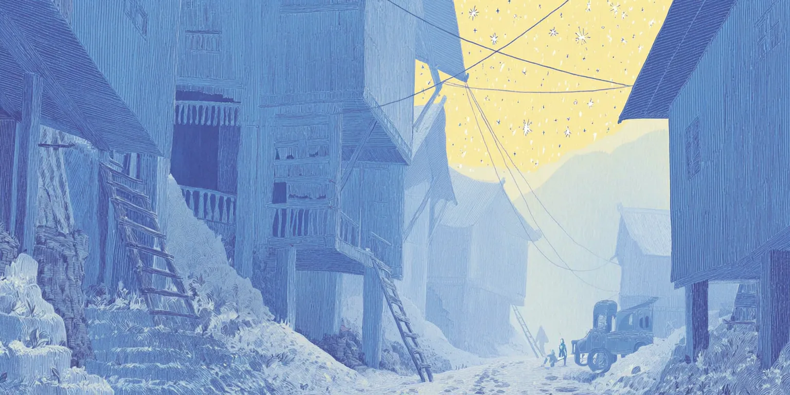
贰.规则之轮 & 叁.命数之变
宇宙的终极形态是一个名为‘盘迴’的时钟。它不由齿轮驱动，而是由星云与引力波构成。在这个巨大的平面上，时间不再是直线，而是永恒的旋转。所有文明、朝代与物种，不过是这巨大盘面上依附的尘埃。”“‘盘迴’的十二点方向，是‘乾位’与‘坤位’的无限接近点。这里是万物的起点，也是终点。逝去的生命在这里被吸入虚空，瞬间又被重新喷吐而出，开始新的轮回。始与终，在此重叠。”
“在‘盘迴’上，离圆心越远，线速度越快，时间流逝越迅猛；离圆心越近，时间越粘稠。人是盘上的光点，所处的位置决定了他们生命周期的长短。众生皆被困在各自的轨道上，无法越界。”“命运本是精密编织的网。但当某个个体爆发出巨大的能量——通常源于伟大的牺牲或意志——原本平行的命运织线会被震断。这是‘盘迴’无法计算的变量。”“当变量出现，规则被迫重写。这个本该熄灭的生命，因为能量过大无法坍缩成点，被‘盘迴’拉伸成了一条线。它违背了圆周运动的离心力，强行贯穿了绝对禁忌的圆心——那个代表虚无的黑洞。”
“这条线连接了‘盘迴’两端的不同时空。当它旋转时，这根线的两端同时扫过两个世界。这就是为什么‘荡麦’的人会做梦——因为他们不仅仅是点，他们是横跨宇宙两极的弦。”
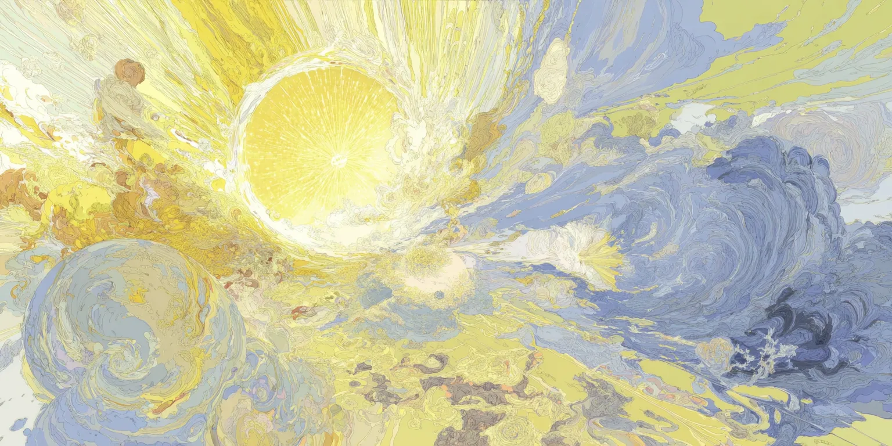
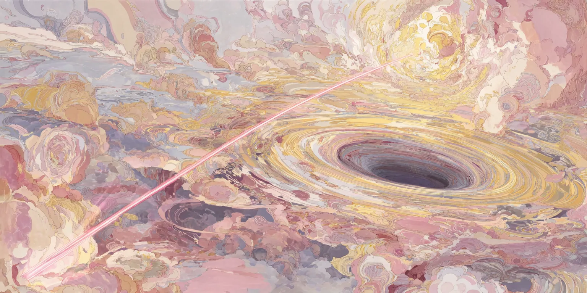
B.情绪版（灵感版）
PDF设计素材参考情绪版 （尚子杰）.pdf8.7 MB ↓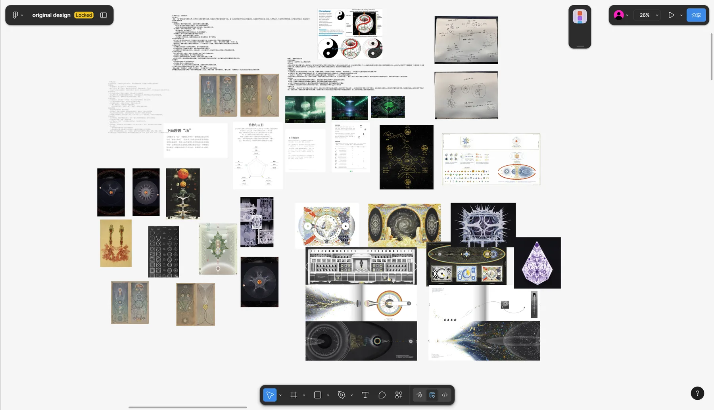
二、场景概念原画
第一章【壹·双界之梦】—— 荡麦村
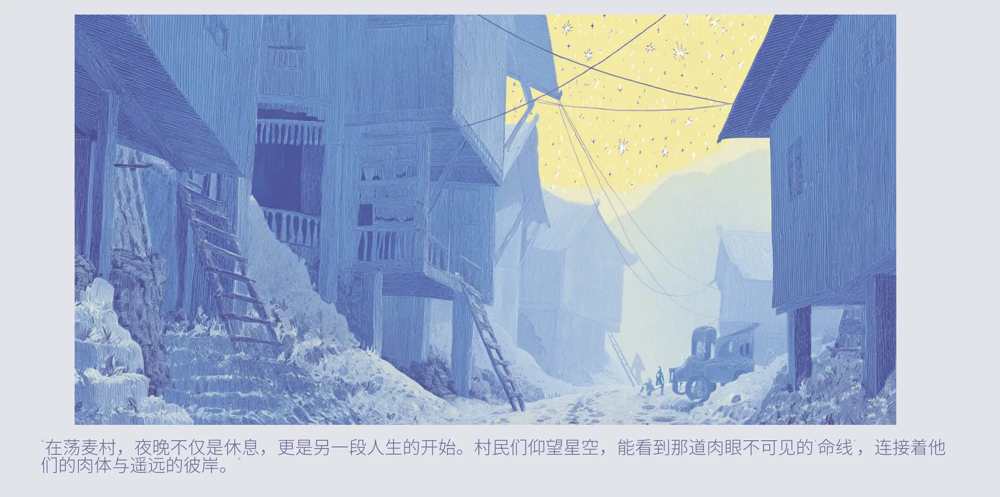
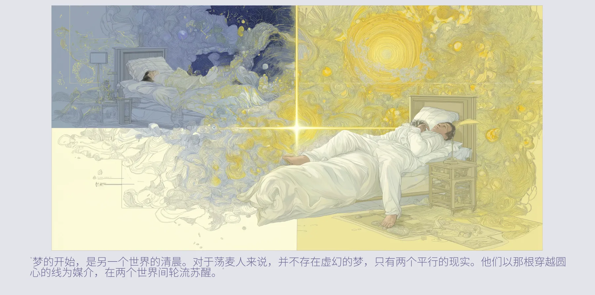
第二章【贰·规则之轮】—— 世界的底层逻辑
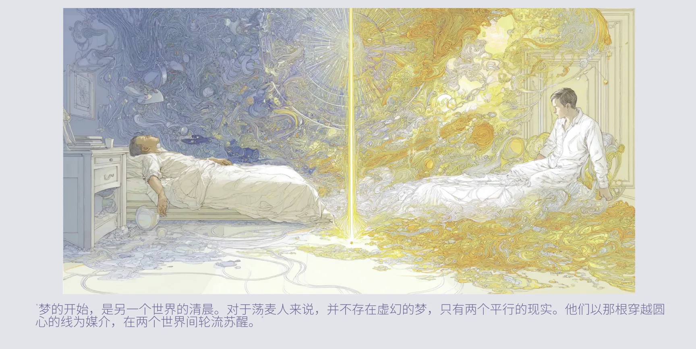
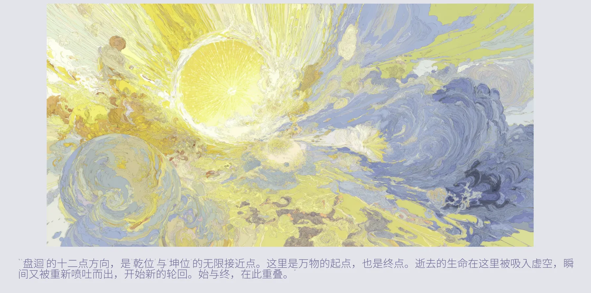
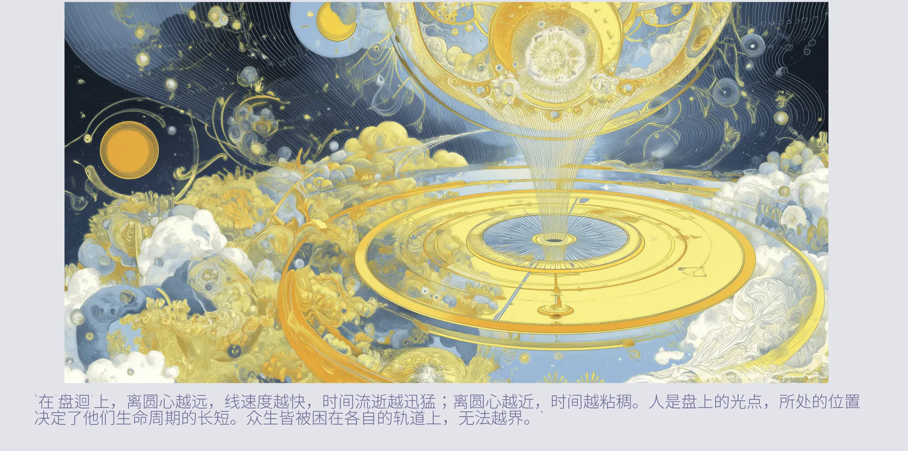
第三章【叁·命数之变】—— 规则的崩坏
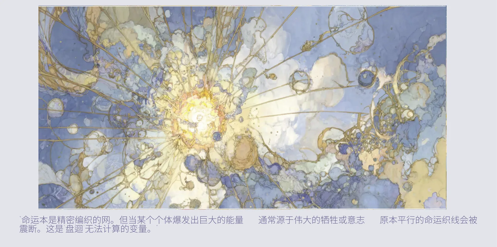
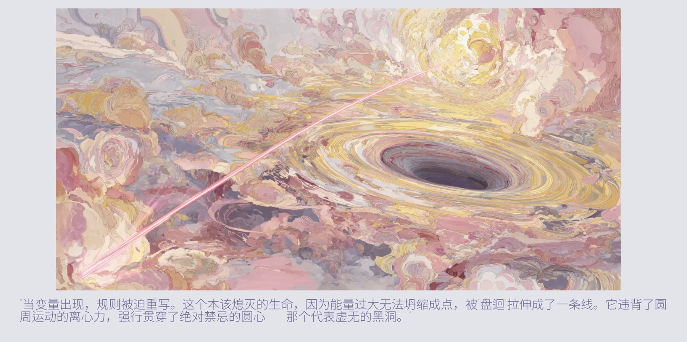
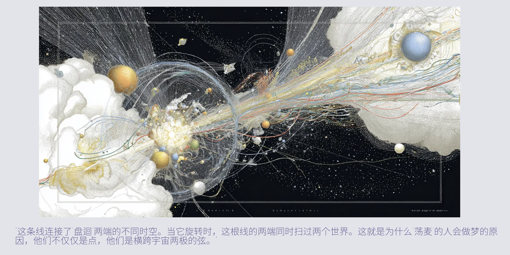